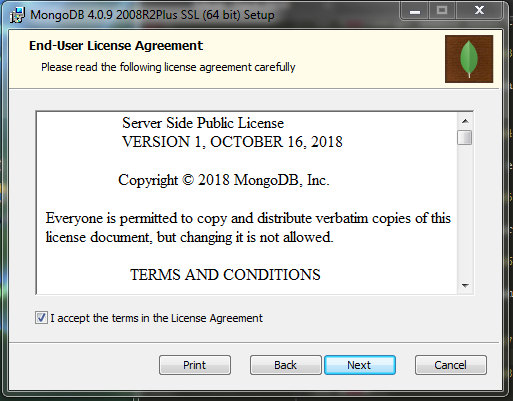

MEAN.JS es una pila de JavaScript completa que contiene MongoDB , Express.JS , Angular.JS y Node.JS. Este marco de JavaScript acelera el desarrollo de aplicaciones web utilizando JavaScript como backend.
Usando MEAN Stack, puede crear rápidamente aplicaciones web fáciles de mantener basadas en JavaScript.avaScript.
Instalacion de Node
lo primero que vamos a realizar sera descargarlo de acuerdo a lo que necesiten, yo usare el de 64bit para windows.
bien una vez que se descargue Node le daremos click en run.
Luego damos click en siguiente
En esta parte maracamos la parte que dice aceptar y damos en siguiente
Luego damos click en siguientebien aqui le dejaremos asi solo daremos click en siguienteY finalmete le damos click en install y esperamos a que finaliceuna vez instalado Node lo siguiente a realizar es la instalacion de mongoDBInstalacion de MongoDB
lo primero que se realizara sera descargar MongoDB, para luego comenzar la instalacion
bien una vez que se finalice la descarga le daremos click en run.Luego damos clic en siguienteEn esta parte Aceptamos las politicas de condiciones de mongo, ya que si no lo hacemos no nos dejara avanzar y le damos click en siguiente

en esta parte selecionaremos complete y daremos click en siguientebien aqui le dejaremos asi solo daremos click en nextsolo le daremos click en siguentey finalmente le damos click en install y esperamos a que finaliceUna vez que termine la instalacion de mongoDB, iremos a la pagina oficcial de Git para descargarlo en esta parte le daremos click en descargar yo usare la de 64bitCuando termine la instalacion le damos click en abrir y saldra una pantalla como la que se muestra a continuacion ahi le damos click en runluego nos saldra una pantalla informando la licencia de GNU, aqui solo damos en siguienteAqui puedes selecionar las que quieras utilizar y las que nos las desmarcas y damos click en siguientea continuacion se muestra donde se guardara si lo desean pueden ejegir otro folder y luego damos click en siguienteAqui dejamos la opcion que ya esta marcada y le damos en siguienteen esta parte elegimos transport backend y le damos click en siguienteluego de seguir los pasos solo damos click en finalizar y listo ya esta instaladoInicio